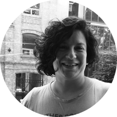

Aportes a la actividad de observación
por Gloria Edelstein
Estas líneas surgen a partir de un convite. ¿A qué me refiero? Recibo de Fabián Iglesias –colega con quien por un tiempo trabajé en procesos de formación docente– la propuesta de integrarme a una actividad que invita a observar una selección de imágenes, compartir mis reflexiones y ponerlas a disposición del debate. Hacerlo para sumar un insumo más al proceso de estudio que, como comunidad de aprendizaje, viene realizando un grupo de docentes de la escuela Cura Brochero. Para ser franca, tentador convite al estar tan ligado a mi trayectoria profesional.
Antes de aludir a la serie fotográfica, quisiera escribir sobre algunas cuestiones que hacen a la actividad de observación y que operan, en mi caso, como marco de referencia teórico-metodológico.
Por mucho tiempo, la observación en el campo educativo estuvo ligada a la evaluación en términos de control. Hace varios años que se discute este propósito y se destaca el valor de la observación como una manera de reencontrarse con situaciones que acontecen en distintos ámbitos y como una vía para volver a pensarlas en posición crítica, con la intención de producir los cambios que se adviertan necesarios. Ya no más para identificar qué salió mal, para reconocer la falta, sino para contar con elementos que permitan construir conocimientos y opciones alternativas de actuación.
La profesionalización del trabajo docente, propósito que se ha tornado prioritario en las últimas décadas, reclama y propicia la indagación acerca de las propias prácticas. Para ello, se apuesta a que los docentes integren, al conjunto de tareas que les son propias, procesos de estudio acerca de su accionar cotidiano. De esta manera, se entiende que pensar en términos de profesionalidad y hacerlo de manera genuina –es decir, que supere la mera retórica respecto del ser docente hoy– requiere que los maestros asuman una posición de indagación respecto a sus propias prácticas y lo hagan desde una posición reflexiva, crítica y situada. En esta perspectiva, los docentes se constituyen en estudiosos de sus propias enseñanzas. De ahí el valor de esta propuesta que organiza grupos de estudio como parte del trabajo de enseñar.
La complejidad de los procesos de enseñar, y la fuerte implicación de los maestros y profesores en ellos, demanda superar el aislamiento y la soledad y, con ello, la autorreferencia. Demanda, además, procurar procesos de objetivación de las producciones resultantes, dando lugar a la conversación al interior de los grupos de docentes, constituidos de este modo en comunidades de aprendizaje. Este accionar reclama una dinámica que habilite la profundización en cuestiones teórico-metodológicas, otorgando rigor a las narrativas que surgen de la presentación de experiencias y su expresión en los más diversos formatos, para que se constituyan en material de base para el intercambio, el análisis y la producción colectiva. Producción que daría cuenta de casos atravesados por miradas diversas, siempre con perspectiva reflexiva, crítica y situada en el ámbito de un colectivo que estudia y produce acerca de sus prácticas.
Estos procesos permiten tomar conciencia de que las miradas están atravesadas por filtros que obstaculizan, en ciertos casos, una genuina captura del acontecer, ya sea por la actualización de categorías heredadas (homogeneizantes, asociadas a universales y a un deber ser prefigurado) o por diversas interiorizaciones que se naturalizan y terminan por definir lo normal. Las descripciones que sobre esa base se realizan inhiben la captura de aquello que acontece en su realidad. Por eso cobran sentido los planteos tan conocidos de “desnaturalizar aquello que fue naturalizado”, cuestionar “lo esperable”, tomar distancia de estereotipos y prejuicios. Esto precisa de un trabajo sobre la mirada que permita abrirla, que dé lugar incluso a aquello que considerábamos impensable respecto de acciones y situaciones observadas.
Al plantear la observación, no cabe duda de que los docentes cuentan con elementos respecto de lo que sería observable, pero en perspectiva de indagación etnográfica se sugiere tomar distancia de categorías teóricas que ya constituyen los parámetros de referencia adoptados por el colectivo docente para, así, dar lugar prioritario a las singularidades de ámbitos y situaciones que son objeto de observación. Recién en la instancia de análisis –y luego de haber rescatado lo singular, lo idiosincrático– se recuperan estos referentes.
Respecto del registro observacional, es importante distinguir “observables directos” de “observables construidos". Los primeros remiten a acciones, hechos y situaciones que se reconocen a simple vista, mientras que los segundos derivan de preguntas sobre algo que aparece, se infiere, sin que quede claro su sentido. Por ejemplo, un observable directo sería la entrega de un texto para ser leído en subgrupos. Si la consigna para la lectura se da para todos juntos o si se plantea para cada subgrupo, el porqué de una u otra decisión requiere de una labor de elaboración respecto de la cual solo se pueden establecer conjeturas a validar (observable construido).
Una cuestión importante es que el registro debe ser exhaustivo y descriptivo. Es decir, se consigna absolutamente todo, sin agregar interpretaciones o emitir juicios de valor. Cuando algo no se alcanzó a registrar, se colocan puntos suspensivos y, una vez finalizada la observación, se completa. De este modo, la singular recuperación que realiza el observador, que puede o no coincidir con lo realmente acontecido, queda separada.
Hasta aquí solo he mencionado cuestiones a tener en cuenta en la instancia de la observación propiamente dicha. Luego de finalizada la actividad, la labor a realizar es, primero, la deconstrucción de todo lo actuado y, luego, su reconstrucción.
Al recorrer la serie fotográfica, algunas interpretaciones derivadas del registro están ligadas directamente a lo que se observa a simple vista en la fotografía; en cambio, otras devienen de inferencias, conjeturas o hipótesis interpretativas que surgen como derivaciones de la observación. Referiré entonces a escenarios y escenas observadas para señalar una lectura posible de diferentes fotografías y algunas reflexiones como disparadoras del debate a realizar por los docentes participantes del grupo de estudio. Esta labor permite recoger datos que pueden resultar de interés en futuras acciones en el marco de grupos de estudio de docentes que tienen en común trabajar en una misma institución.
La observación de fotografías preparadas como material de trabajo resulta, en el proceso de estudio, un interesante ejercicio para afinar desde los registros la captura de aspectos que pueden resultar de interés respecto al devenir del trabajo docente en la cotidianeidad, tanto a nivel institucional como áulico. Y desde la lectura, dar cuenta de itinerarios, cartografías, tramas tendientes a expresar la potencia formativa de espacios de estudio.
En algunos aspectos, será factible recuperar con claridad características en lo que hace al espacio de concreción de las actividades propuestas como del accionar de docentes individual o grupalmente; en otros, en cambio, solo algunos indicios, señales, elementos base para la posterior interpretación e incluso validación. Es decir que se hace necesario asumir los límites de captura precisa, dado el lugar de extranjería de quien observa. Y, en este caso, advertir los modos contemporáneos y hospitalarios de esta formación docente que el proyecto institucional sostiene.
Atento lo señalado, destacaría principalmente la opción de diferentes espacios para la realización de la actividad en cada jornada, puntualizando al respecto no solo la variedad de aulas por su tamaño o por la actividad que allí se desarrolla (salas de clase, biblioteca, salón de actos y de usos múltiples, entre otros), sino por aprovechar espacios del patio, opción bastante inusual para la realización de actividades de este tipo en el ámbito escolar. Cabe señalar que esta escuela tiene un hermoso patio que, además de la vegetación y el clima saludable que ofrece en él la naturaleza, cuenta con mesas y bancos que facilitan concretar allí la labor de estudio y las diferentes acciones requeridas según las etapas de esta actividad. En lo relativo a las aulas, la diversidad en sus tamaños y estructura arquitectural y la peculiar distribución del mobiliario ofrecen posibilidades de aprovechamiento para la tarea planteada en cada situación. Aun con mesas rectangulares, cuadradas o redondas, es observable en todos los casos la posibilidad de configurar una estructura circular que permita el diálogo “cara a cara” en las instancias de subgrupo, con factibilidad, a su vez, de una configuración de mayor amplitud para las instancias de socialización. Otro aspecto que es posible inferir de los registros observacionales es la identificación de roles y/o funciones diferentes. Por ejemplo, el de una “coordinadora”, miembro de grupo expositor, y, en general, roles en las tareas de los subgrupos tales como asumir lecturas, tomar notas, subrayar los textos, elaborar pequeños afiches u otros que articulan los anteriores. También, actuar como relator en el subgrupo o en el grupo general, acciones todas propias de procesos de estudio en instancias de formación. Es decir, en algunas fotografías se identifican acciones diferentes por parte de diversos docentes. Asimismo, y ello resulta muy interesante, en las imágenes se observan rostros con diversas expresiones y se pone el ojo en manos y cuerpos, como muestra de una implicación integral en una actividad académica que incluye lo intelectual; además, hacen foco en expresiones subjetivas, expresadas también en esos rostros, manos y cuerpos.
Una cuestión destacable es que si bien la mayoría de las fotos muestran un conjunto de participantes, hay otras en las que la mirada está puesta en uno, dos o tres docentes realizando una actividad específica con la intención –pareciera– de destacarla del conjunto.
Se observan, además, sobre las mesas –como parte de un clima de cierta informalidad– termos, mates, celulares. En algunas fotos hay notebooks, y –algo a subrayar especialmente– en otras muestran solo apuntes o cuadernos de notas y fotocopias y las marcas en ellas, propias de instancias de estudio. Resulta notable en este sentido una fotografía en la que se ve a un profesor frente a una página casi en blanco, pero que en el extremo superior dice: “Construir lectores y desde allí con una flecha la palabra libertad”, agregando al lado “la lectura empodera”, que entiendo valioso destacar, pues es dable pensar que ese es el sentido que se asigna al planteo del estudio como aporte central en una instancia de formación.
También importa señalar que en todas las fotografías se registra tanto a docentes como al grupo realizando la actividad en forma distendida; signos, señales reveladores de un clima positivo para la concreción de las acciones planteadas. En esta clave de sentido, se podría decir, tomando aportes de Dussel y Caruso, que los docentes “habitan” los espacios en que trabajan y no simplemente “los ocupan”, así como que se comprometen subjetivamente con las tareas haciéndolas propias, recreándolas, adoptando para ello una posición activa y constructiva. En suma, siendo parte.
⥈

Gloria Edelstein es doctora en Letras y licenciada en Letras Modernas por la Universidad Nacional de Córdoba. Docente en el Instituto de Educación Superior "Simón Bolívar".
Autoría
Gloria Edelstein
Equipo de producción del ensayo
Corrección literaria: Martín Schuliaquer
Diseño gráfico: Renata Malpassi
Diseño web: Matías Rosini
Serie de álbumes “Fotografías de escuelas: el arte de la observación”
Una propuesta fotográfica que captura escenas en las instituciones educativas de formación docente y reflexiona pedagógicamente sobre ellas.
Esta serie constituye un subproyecto de “Itinerarios en el tiempo. Una cartografía de la formación docente en Córdoba”.
https://isep-cba.edu.ar/itinerarioseneltiempo
Dirección: Adriana Fontana
Coordinación general: Luciana Cometto y Luciana Dadone
Coordinación del subproyecto “Fotografías de escuelas: el arte de la observación”: Fabián Iglesias y Mariana Schneider
Cómo citar este material
G. Edelstein y equipos de producción del ISEP. (2025). Aportes a la actividad de observación. Itinerarios en el Tiempo. Una cartografía de la formación docente en Córdoba. Para el Instituto Superior de Estudios Pedagógicos, Ministerio de Educación de la Provincia de Córdoba.
Este material está bajo una licencia Creative Commons (CC BY-NC 4.0)